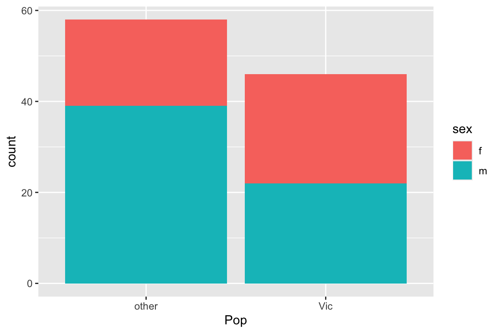
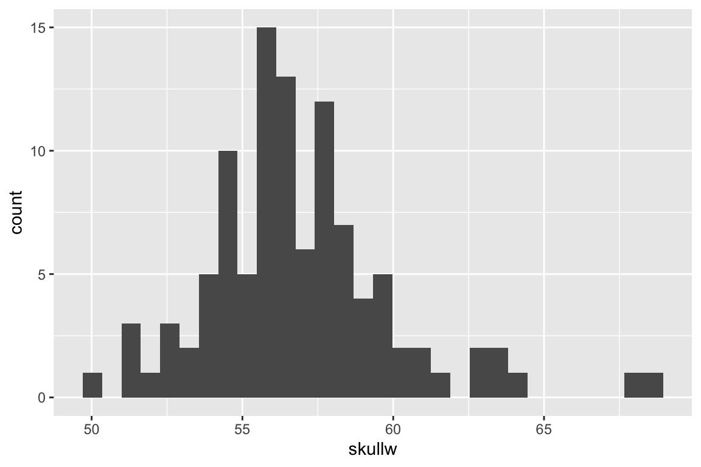
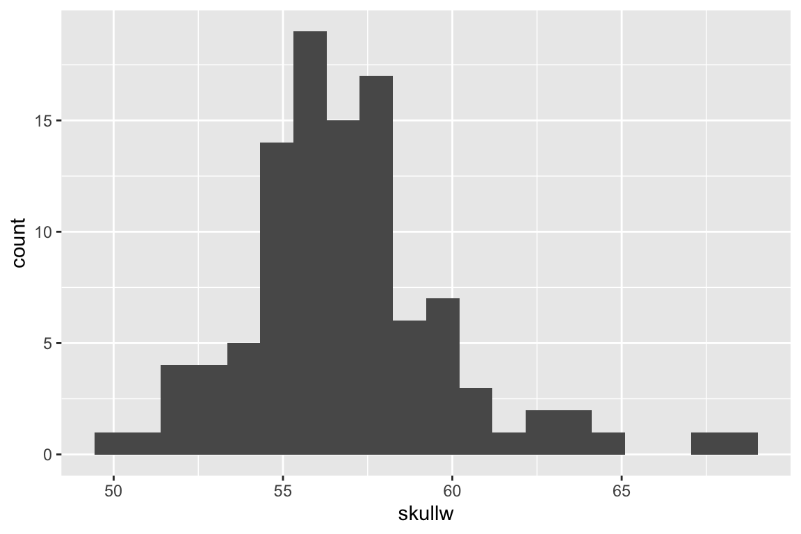
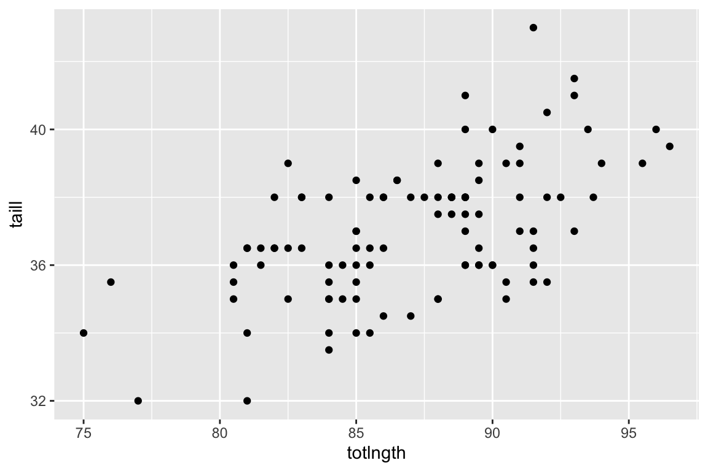
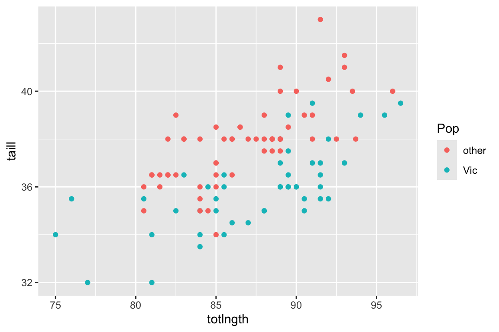

Chapter 3 Getting Started with R
3.1 What is R?
R is a statistical computing environment and programming language. It is free, open source, and has a large and active community of developers and users. There are many different R packages (libraries) available for conducting a wide variety of different analyses, for everything from genome sequence data to geospatial information.
3.2 What is RStudio?
RStudio (http://www.rstudio.com/) is an open source integrated development environment (IDE) that provides a nicer graphical interface to R than does the default R GUI.
The figure below illustrates the RStudio interface, in its default configuration. For the exercises in this chapter you’ll be primarily entering commands in the “console” window. We’ll review key parts of the RStudio interface in greater detail in class.

Figure 3.1: RStudio window with the panes labeled
3.3 Entering commands in the console
You can type commands directly in the console. When you hit Return (Enter) on your keyboard the text you typed is evaluated by the R interpreter. This means that the R program reads your commands, makes sure there are no syntax errors, and then carries out any commands that were specified.
Try evaluating the following arithmetic commands in the console:
If you type an incomplete command and then hit Return on your keyboard, the console will show a continuation line marked by a + symbol. For example enter the incomplete statement (10 + 5 and then hit Enter. You should see something like this.
> (10 + 5
+The continuation line tells you that R is waiting for additional input before it evaluates what you typed. Either complete your command (e.g. type the closing parenthesis) and hit Return, or hit the “Esc” key to exit the continuation line without evaluating what you typed.
3.5 Using R as a Calculator
The simplest way to use R is as a fancy calculator.
10 + 2 # addition
10 - 2 # subtraction
10 * 2 # multiplication
10 / 2 # division
10 ^ 2 # exponentiation
10 ** 2 # alternate exponentiation
pi * 2.5^2 # R knows about some constants such as Pi
10 %% 3 # modulus operator -- gives remainder after division
10 %/% 3 # integer divisionBe aware that certain operators have precedence over others. For example multiplication and division have higher precedence than addition and subtraction. Use parentheses to disambiguate potentially confusing statements.
Division by zero produces an object that represents infinite numbers. Infinite values can be either positive or negative
Invalid calculations produce a objected called NaN which is short for “Not a Number”:
3.5.1 Common mathematical functions
Many commonly used mathematical functions are built into R. Here are some examples:
3.6 The R Help System
R comes with fairly extensive documentation and a simple help system. You can access HTML versions of the R documentation under the Help tab in Rstudio. The HTML documentation also includes information on any packages you’ve installed. Take a few minutes to browse through the R HTML documentation. In addition to the HTML documentation there is also a search box where you can enter a term to search on (see red arrow in figure below).

Figure 3.2: The RStudio Help tab
3.6.1 Getting help from the console
In addition to getting help from the RStudio help tab, you can directly search for help from the console. The help system can be invoked using the help function or the ? operator.
If you are using RStudio, the help results will appear in the “Help” tab of the Files/Plots/Packages/Help/Viewer (lower right window by default).
What if you don’t know the name of the function you want? You can use the help.search() function.
In this case help.search("log") returns all the functions with
the string log in them. For more on help.search type
?help.search.
Other useful help related functions include apropos() and example(). apropos returns a list of all objects (including function names) in the current session that match the input string.
example() provides examples of how a function is used.
3.7 Variable assignment in R
An important concept in all programming languages is that of “variable assignment”. Variable assignment is the act of creating labels that point to particular data values in a computers memory, which allows us to apply operations to the labels rather than directly to specific values. Variable assignment is an important mechanism of abstracting and generalizing computational operations.
Variable assignment in R is accomplished with the assignment operator, which is designated as <- (left arrow, constructed from a left angular bracket and the minus sign). This is illustrated below:
x <- 10 # assign the variable name 'x' the value 10
sin(x) # apply the sin function to the value x points to
x <- pi # x now points to a different value
sin(x) # the same function call now produces a different result 3.7.1 Valid variable names
As described in the R documentation, “A syntactically valid name consists of letters, numbers and the dot or underline characters and starts with a letter or the dot not followed by a number. Names such as ‘.2way’ are not valid, and neither are the reserved words.”
Here are some examples of valid and invalid variable names. Mentally evaluate these based on the definition above, and then evaluate these in the R interpetter to confirm your understanding :
x <- 10
x.prime <- 10
x_prime <- 10
my.long.variable.name <- 10
another_long_variable_name <- 10
_x <- 10
.x <- 10
2.x <- 2 * x3.8 Data types
All of our arithmetic examples above produced numerical values. The default numerical data type in R is called a “double”. “double” is short for “double precision floating point value” which refers to the numerical precision that R uses when carrying out calculations.
R has a function called typeof() that we can use to get information about an object’s type. Let’s illustrate the use of typeof() and confirm that our numerical calculations return objects of the “double” type:
3.9 Logical values
When we compare values to each other, our calculations no longer return “doubles” but rather TRUE and FALSE values. This is illustrated below:
10 < 9 # is 10 less than 9?
10 > 9 # is 10 greater than 9?
10 <= (5 * 2) # less than or equal to?
10 >= pi # greater than or equal to?
10 == 10 # equals?
10 != 10 # does not equal?TRUE and FALSE objects are of “logical” data type (known as “Booleans” in many other languages, after the mathematician George Boole).
When working with numerical data, tests of equality can be tricky. For example, consider the following two comparisons:
Mathematically we know that both \((\sqrt{10})^2 = 10\) and \((\sqrt{4})^2 = 4\) are true statements. Why does R tell us the first statement is false? What we’re running into here are the limits of computer precision. A computer can’t represent \(\sqrt 10\) exactly, whereas \(\sqrt 4\) can be exactly represented. Precision in numerical computing is a complex subject and a detailed discussion is beyond the scope of this course. However, it’s important to be aware of this limitation (this limitation is true of any programming language, not just R).
To test “near equality” R provides a function called all.equal(). This function takes two inputs – the numerical values to be compared – and returns True if their values are equal up to a certain level of tolerance (defined by the built-in numerical precision of your computer).
3.9.1 Logical operators
Logical values support Boolean operations, like logical negation (“not”), “and”, “or”, “xor”, etc. This is illustrated below:
x <- TRUE
y <- FALSE
!x # logical negation -- reads as "not x"
x & y # AND: are x and y both TRUE?
x | y # OR: are either x or y TRUE?
xor(x,y) # XOR: is either x or y TRUE, but not both?The function isTRUE is sometimes useful:
3.10 Character strings
Character strings (“character”) represent single textual characters or a longer sequence of characters. They are created by enclosing the characters in text either single our double quotes.
Character strings have a length, which can be found using the nchar function:
There are a number of built-in functions for manipulating character strings. Here are some of the most common ones.
3.10.1 Joining strings
The paste() function joins two characters strings together:
paste(first.name, last.name) # join two strings
#> [1] "jasmine smith"
paste("abc", "def")
#> [1] "abc def"Notice that paste() adds a space between the strings? If we didn’t want the space we can call the paste() function with an optional argument called sep (short for separator) which specifies the character(s) that are inserted between the joined strings.
3.10.2 Splitting strings
The strsplit() function allows us to split a character string into substrains according to matches to a substring. For example, we could break a sentence into it’s constituent words as follows:
sentence <- "Call me Ishmael."
words <- strsplit(sentence, " ") # split on space
words
#> [[1]]
#> [1] "Call" "me" "Ishmael."Notice that strsplit() is the reverse of paste().
3.10.3 Substrings
The substr() function allows us to extract a substring from a character object by specifying the first and last positions (indices) to use in the extraction:
3.11 Packages
Packages are libraries of R functions and data that provide additional capabilities and tools beyond the standard library of functions included with R. Hundreds of people around the world have developed packages for R that provide functions and related data structures for conducting many different types of analyses.
Throughout this course you’ll need to install a variety of packages. Here I show the basic procedure for installing new packages from the console as well as from the R Studio interface.
3.11.1 Installing packages from the console
The built-in function install.packages provides a quick and conveniet way to install packages from the R console.
3.11.2 Install the tidyverse package
To illustrate the use of install.package, we’ll install a collection of packages (a “meta-package”) called the tidyverse. Here’s how to install the tidyverse meta-package from the R console:
The first argument to install.packages gives the names of the package we want to install. The second argument, dependencies = TRUE, tells R to install any additional packages that tidyverse depends on.
3.11.3 Installing packages from the RStudio dialog
You can also install packages using a graphical dialog provided by RStudio. To do so pick the Packages tab in RStudio, and then click the Install button.

Figure 3.3: The Packages tab in RStudio
In the packages entry box you can type the name of the package you wish to install.
3.11.4 Loading packages with the library() function
Once a package is installed on your computer, the package can be loaded into your R session using the library function. To insure our previous install commands worked correctly, let’s load the packages we just installed.
Since the tidyverse pacakge is a “meta-package” it provides some additional info about the sub-packages that got loaded.
When you load tidyverse, you will also see a message about “Conflicts” as several of the functions provided in the dplyr package (a sub-package in tidyverse) conflict with names of functions provided by the “stats” package which usually gets automically loaded when you start R. The conflicting funcdtions are filter and lag. The conflicting functions in the stats package are lag and filter which are used in time series analysis. The dplyr functions are more generally useful. Furthermore, if you need these masked functions you can still access them by prefacing the function name with the name of the package (e.g. stats::filter).
3.12 Reading data from a file
We’ll use the read_csv function defined in the readr package (loaded via tidyverse) to read a CSV formatted data file. We’ll load a data file called possums.csv.
The possums data set includes information from a study of mountain brushtail possums (Trichosurus caninus; Lindenmayer DB et al. 1995, Australian Journal of Zoology 43, 449-458.) The investigators recorded variables about individual possum’s sex, age, where they were collected, and a range of morphological measurements. For example the variable skullw is the width of the skull, taill is tail length, etc.
Notice that we read the CSV file directly from a remote file via a URL. If instead, you wanted to load a local file on your computer you would specify the “path” – i.e. the location on your hard drive where you stored the file. For example, here is how I would load the same file if it was stored in the standard downloads directory on my Mac laptop:
3.13 Exploring the “possums” data set
Let’s take a moment to explore the possums data set. First, how big is it? The dim function will tell us the dimensions (# of rows and columns) of the data table we loaded:
What are the names of the columns of the table?
3.14 Simple tables
Let’s use the count function to count the number of male and female possums and the number collected from each of the populations of interest in this study (Victoria and “other”):
We can break down the counts by population and sex combinined by specifying both variables:
How do the results differ if instead you write count(possums, sex, Pop)?
Finally, let’s get counts for the different age groups in the study:
Notice that besides the nine age groups, there is a grouping for “NA”. “NA” means “not available” and is the standard designation for missing values. This table tells us there are two possums for which age estimates were not available.
3.15 Simple figures
Throughout this course we’ll use a package called “ggplot2” to generate figures. The ggplot2 package is part of the tidyverse and is automatically loaded when we load the tidyverse library. In the code below, we’ll demonstrate how to use ggplot by example. In a later lecture we’ll go into greater detail about how ggplot is structured and the broader conceptual framework that underpins its design.
3.16 Bar plots
First let’s create some simple bar plots as alternate representations of the counts:


3.17 Histograms
A histogram is a special type of bar plot, typically used with continuous data. In a histogram, we divide the range of the data into bins of a given size, and use vertical bars to depict the frequency (count) of observations that fall into each bin. This gives a good sense of the intervals in which most of the observations are found.
Here is a histogram for the skull width data:
ggplot(possums) + geom_histogram(aes(x = skullw))
#> `stat_bin()` using `bins = 30`. Pick better value with `binwidth`.
Notice the warning message that was generated, about the default number of bins that were used. ggplot is alerting us that that we may want to consider regenerating the plot with a different number of bins. Let’s try a smaller number of bins:

Try creating histograms for taill and totlngth.
3.18 Scatter plots
A scatter plot is typically used to represent two numerical variables simultaneously. Each point in a scatter plot is an individual in the data set, and the location of the points represent the measured values of the variables of interest on that individual.

We can add information about categorical variables to our scatter plot by using color or shape to depict different classes

We can represent more than two categorical variables in our scatter plot by using both shape and color. We’ll also change the size and transparency of the plotted points (via the alpha argument).
ggplot(possums) +
geom_point(aes(x = totlngth, y = taill, color = Pop, shape = sex),
size = 2, alpha = 0.75)
Explore some of the other bivariate relationships in the possums data by creating additional scatter plots. Given 9 numerical variables, how many distinct pairwise scatter plots could you create?
3.4 Comments
When working in the R console, or writing R code, the pound symbol (
#) indicates the start of a comment. Anything after the#, up to the end of the current line, is ignored by the R interpretter.Throughout this course I will often include short explanatory comments in the code examples.